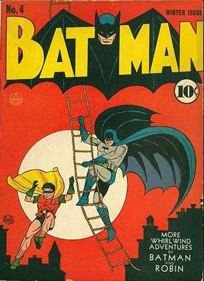
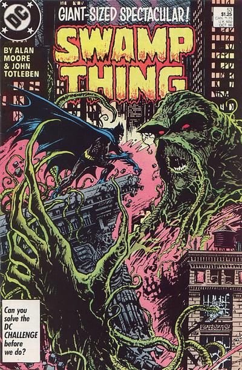
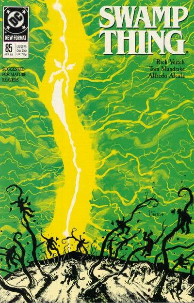

Gotham City or Gotham is a fictional American city. Batman's place of residence was first identified as Gotham City in Batman #4 (Winter 1940).

New York Times journalist William Safire described Gotham City as "New York below 14th Street, from SoHo to Greenwich Village, the Bowery, Little Italy, Chinatown, and the sinister areas around the base of the Manhattan and Brooklyn Bridges."

In Swamp Thing #53, Alan Moore wrote a fictional history for Gotham City that other writers have generally followed. According to Moore's tale, a Norwegian mercenary, Captain Jon Logerquist, founded Gotham City in 1635 and the British later took it over—a story that parallels the founding of New York by the Dutch (as New Amsterdam) and later takeover by the British. During the American Revolutionary War, Gotham City was the site of a major battle (paralleling the Battle of Brooklyn in the American Revolution). This was detailed in Rick Veitch's Swamp Thing #85 featuring Tomahawk. Rumors held it to be the site of various occult rites.

Many storylines have added more events to Gotham's history, at the same time greatly affecting the city and its people. Perhaps the greatest in effect was a long set of serial storylines, which started with Ra's al Ghul releasing a debilitating virus called the "Clench" during the Contagion storyline. As that arc concluded, the city was beginning to recover, only to suffer an earthquake measuring 7.6 on the Richter Scale in the 1998 "Cataclysm" storyline. This resulted in the federal government cutting Gotham off from the rest of the United States in the 1999 storyline "No Man's Land". This trio of storylines allowed writers the freedom to redefine the nature and mood of the city.